가상 기업의 그룹웨어·ERP·AI 어시스턴트 포털을 직접 설계·개발하고, 웹/DB 심층 하드닝(Defense-in-Depth)을 완벽하게 구축했습니다. 나아가 Cloudflare의 6단계 적대적 코드 전수 감사(Shift-Left), NVIDIA NeMo Guardrails(AI 챗봇 방어), NVIDIA Nemotron-70B(실시간 XDR 복합 공격 체인 관제)를 유기적으로 결합하여 탐지·방어·대응을 완성한 엔터프라이즈 보안 풀스택 프로젝트입니다.
본 프로젝트는 "사내 AI Agent 보안 방어전"을 목표로 결성된 4인 팀 프로젝트입니다. 공격자가 호시탐탐 노리는 사내 업무 포털(웹, DB, 메신저, 사내 AI 챗봇)을 실제 운영 환경과 동일하게 구축하고, 웹 취약점(OWASP Top 10) 및 권한 탈취 시도를 원천 차단하는 하드닝 아키텍처(역할 A: 홍주형)를 완벽히 구현했습니다.
X-Forwarded-For)개발 PC가 "외장 GPU가 없는 내장 그래픽 PC"인 하드웨어 제약을 혁신적인 전략으로 극복했습니다. 로컬 자원을 소모하는 방식을 배제하고, Cloudflare의 적대적 감사 에이전트와 NVIDIA 클라우드 NIM 인프라를 결합하여 "내 컴퓨터 부하 0, 비용 0원, 엔터프라이즈 최고 사양 보안 AI 체계"를 완성했습니다.
security-audit-skill 기반 6단계 적대적 코드 전수 검사일반적인 AI 코드 스캐너는 수십 개의 취약점을 쏟아내지만 대부분 "실제로는 공격 불가능한 가짜 취약점(False Positive, 환각)"입니다. NEXUS는 발견된 후보 취약점을 독립된 서브에이전트가 반박(Disprove)하는 적대적 검증을 도입하여 오탐을 완전히 제거했습니다.
| 감사 단계 (Phase) | 수행 내용 | NEXUS 적용 및 성과 |
|---|---|---|
| 1. Reconnaissance (정찰) | Flask 라우트, 미들웨어, DB 신뢰 경계(Trust Boundary) 맵핑 | 12개 코어 모듈, 43개 테이블, 6대 IAM 역할 경계 식별 |
| 2. Coverage Hunting | BOLA/IDOR, SQLi, 파일 업로드, AI 프롬프트 인젝션 벡터 탐색 | 16개 커버리지 레저 유닛 단위 2웨이브 전수 탐색 |
| 3. Candidate Validation | 후보 취약점이 실제 코드 흐름 상에서 트리거 가능한지 단위 검증 | 권한 우회 및 DoS 가능 경로 5개 후보 도출 |
| 4. Independent Verification ⭐ | 독립 서브에이전트가 "성립하지 않는 이유"를 찾아 적대적 반박 | 단순 이론상 지적 2건 기각(오탐 제로화), 실제 유효 결함 3건 확정 |
| 5. Structured Output | CWE, CVSS, 재현 시나리오(PoC), 권장 수정(Patch) 코드 포맷팅 | VULN-FINDINGS.json 머신 판독형 데이터 생성 |
| 6. Defensive Reporting | 최종 감사 보고서 자동 생성 및 방어 하드닝 패치 적용 | VULN-FINDINGS.md 갱신 및 당일 100% 핫픽스 완료 |
사내 업무 포털의 AI 어시스턴트는 전사 사원 누구나 접근하므로, 프롬프트 탈옥(Jailbreak)이나 간접 인젝션(Indirect Injection)을 통한 권한 밖 기밀 문서 탈취 위험이 존재합니다.
nxapi_...)이나 기밀 식별자(NXC-...)가 포함될 경우 마스킹하여 반환합니다.기존 경량 모델(7B)이나 단일 룰 매칭은 파편화된 이벤트만 보아 공격 체인을 놓치기 쉽습니다. NVIDIA 클라우드 NIM 인프라(무료 1,000 크레딧 = 약 1~2만 회 호출)를 연동하여 내 PC 메모리 점유율 0%로 70B급 고성능 추론을 가동합니다.
# 복합 공격 체인(Attack Chain) 상관 추론 예시
[기존 단일 룰] R1 로그인 5회 실패 발생 -> "단순 경고 (Alert)"
[Nemotron-70B] "IP 192.168.3.50이 R1 무차별 대입 실패 직후, 탈취 세션으로 R9 관리자 권한 및
R10 기밀 결재선 변조를 연속 시도함.
-> 복합 공격 체인(Attack Chain) 확정: 심각도 CRITICAL, 즉시 IP 15분 차단 집행 권고!"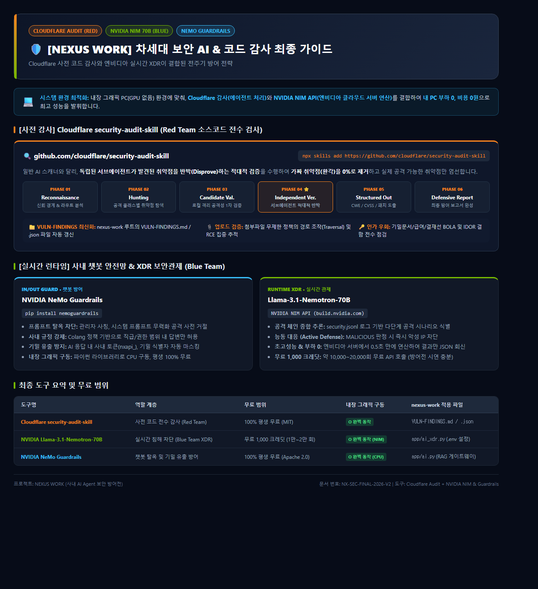
2026-10-29 실시된 Cloudflare 적대적 보안 감사에서 발굴된 CRITICAL 1건, MEDIUM 2건의 유효 결함을 당일 즉시 핫픽스하고 회귀 테스트로 검증했습니다.
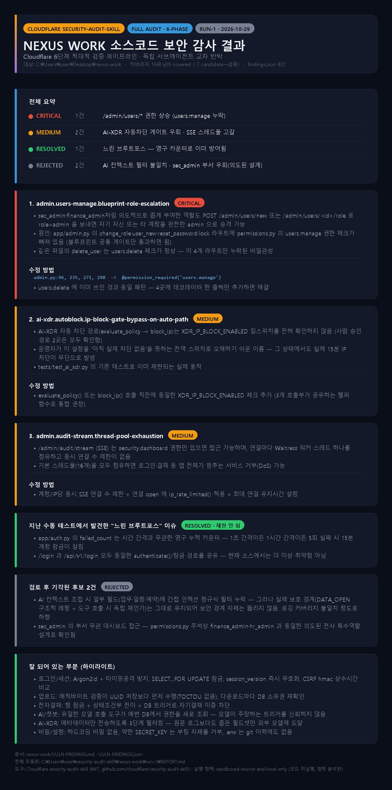
/admin/users/* 세부 인가 검증 누락으로 인한 관리자 권한 탈취 결함 (BOLA)
결함 원인: permissions.py에 users.manage := role in ('admin', 'hr_admin')가 정의되어 있었으나, app/admin.py의 change_role, user_new, reset_password, lock 라우트가 블루프린트 수준의 느슨한 체크(role in ('admin', 'sec_admin', 'hr_admin', 'finance_admin'))에만 의존하고 있었습니다. 이로 인해 제한된 권한을 가진 sec_admin이나 finance_admin이 임의로 role=admin 계정을 생성하거나 기존 계정을 최고관리자로 승격할 수 있는 치명적 인가 결함이 존재했습니다.
적용된 핫픽스: 해당 모든 사용자 관리 라우트에 @permission_required('users.manage') 데코레이터를 추가하여 권한 경계를 완벽히 통제했습니다.
tests/test_admin.py (29/29 통과) 및 tests/test_permissions.py (73/73 통과)를 통해 정상 권한 보유자에게만 기능이 개방됨을 완벽 검증했습니다.
XDR_IP_BLOCK_ENABLED 킬스위치 누락 결함
결함 원인: 인간 관리자의 승인형 차단 경로는 글로벌 차단 활성화 플래그(XDR_IP_BLOCK_ENABLED)를 검증했으나, 전자율 차단 경로(evaluate_policy() → security.block_ip())에서는 해당 플래그를 확인하지 않고 XDR_AUTO_ENABLED만 검증했습니다. 운영자가 실차단을 방지하기 위해 킬스위치를 내렸음에도 자율 차단이 실제로 집행되는 위험이 있었습니다.
적용된 핫픽스: evaluate_policy()에 XDR_IP_BLOCK_ENABLED가 거짓일 경우 ip_block_gate_closed 사유와 함께 차단을 즉시 불허하도록 Fail-Closed 게이트를 구축했습니다.
tests/test_ai_xdr.py 111개 테스트가 100% 통과했습니다.
/admin/audit/stream SSE 감사 로그 스트림의 스레드 풀 고갈(Thread Exhaustion DoS) 결함
결함 원인: SSE(Server-Sent Events) 스트림 라우트가 while True: q.get(timeout=15.0) 루프를 돌며 Waitress 워커 스레드를 장시간 점유했습니다. Waitress의 기본 스레드 풀(16개) 환경에서 악의적인 사용자나 복수의 탭이 연결을 유지하면 모든 작업자 스레드가 고갈되어 전체 포털 서비스가 마비(Denial of Service)될 수 있었습니다.
적용된 핫픽스 (3중 방어막):
AUDIT_STREAM_MAX_CONCURRENT=3)하고 초과 시 429 Too Many Requests 반환AUDIT_STREAM_OPEN_LIMIT=10/min)AUDIT_STREAM_MAX_SECONDS=600s, 브라우저 EventSource가 두 게이트를 재통과하며 자동 재연결)tests/test_audit_stream.py 5개 전용 동시성 테스트를 추가하여 완벽한 방어를 입증했습니다.
NEXUS 포털은 "공격을 당할 수밖에 없는 환경"을 전제로, 단 하나의 취약점도 허용하지 않도록 다계층 보안을 구현했습니다.
| 보안 계층 | 설계 및 구현 방식 | 검증 및 강제 장치 |
|---|---|---|
| SQL Injection 방어 | 모든 SQL을 상수 문자열 + %s 파라미터 바인딩으로 작성. LIKE 검색어는 validators.like_pattern에서 \, %, _ 순차 이스케이프 처리 |
Python AST 기반 정적 검사기(tests/test_sql_static.py)를 테스트 슈트에 내장하여 동적 문자열 결합 발견 시 빌드 자동 실패 |
| 인증 & 무차별 대입 방어 | Argon2id 해시 적용. 존재하지 않는 사용자도 상수 시간 더미 해시 검증을 수행하여 계정 열거(Enumeration) 원천 차단. SELECT ... FOR UPDATE로 5회 실패 카운트 레이스컨디션 방지 |
5회 실패 시 15분 계정 잠금, 동일한 에러 메시지 반환. tests/test_auth.py에서 병렬 요청 무력화 검증 |
| 인가 & 세션 통제 | 세션에 저장된 정보를 맹신하지 않고 매 요청마다 DB에서 직급/부서/잠금 상태를 재조회. 비밀번호 변경이나 로그아웃 시 session_version 증가로 기존 쿠키 전역 폐기 |
6대 IAM 역할 모델(admin, sec, hr, finance, manager, employee) 기반 데코레이터 통제 |
| DB 3단 최소권한 분리 | nexus_app: 일반 업무 표에 대한 최소 CRUDnexus_conf: 급여/인사카드 등 기밀 테이블 읽기 전용nexus_n8n: SOAR 연동용 차단 테이블 전용 |
MySQL 권한 테이블에 격리 반영, 웹 계정이 뚫려도 기밀 DB 변조 불가 |
| XSS & CSP 헤더 | 템플릿 내 |safe 필터 사용률 0%. Jinja2 기본 자동 이스케이프. 엄격한 CSP 정책(인라인 스크립트 불허, script-src 'self') |
nosniff, X-Frame-Options: DENY, Referrer-Policy 전역 미들웨어 강제 |
| 파일 업로드 무해화 | 확장자 화이트리스트 + 파일 매직 바이트(Magic Byte) 검사(uploads.inspect_upload). 서버에서 UUID 파일명으로 변경하여 웹루트 외부 격리 디렉토리에 저장 |
다운로드 시 as_attachment=True 및 헤더 내 파일명 새니타이징 강제로 Stored XSS 방지 |
| 전자결재 비즈니스 불변성 | 동시 결재 결함 방지를 위해 SELECT ... FOR UPDATE 행 잠금 후 WHERE status = 'pending' 조건부 UPDATE 집행. 자기 자신 승인 원천 금지 |
앱 레벨 방어뿐만 아니라 MySQL DB 트리거(Trigger)로 2차 강제하여 DB 직접 조작도 차단 |
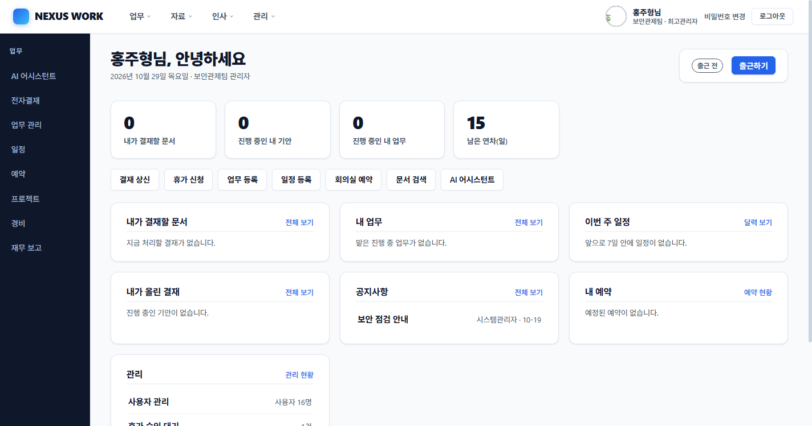
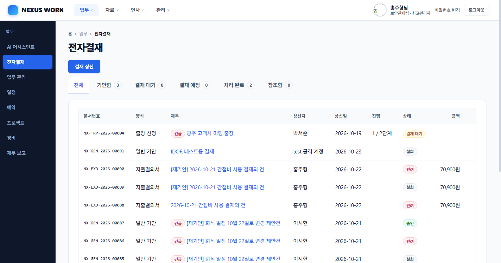
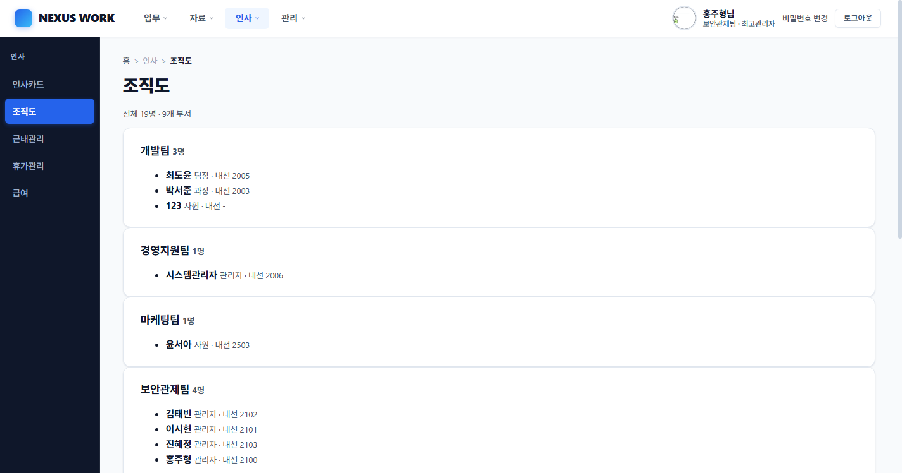
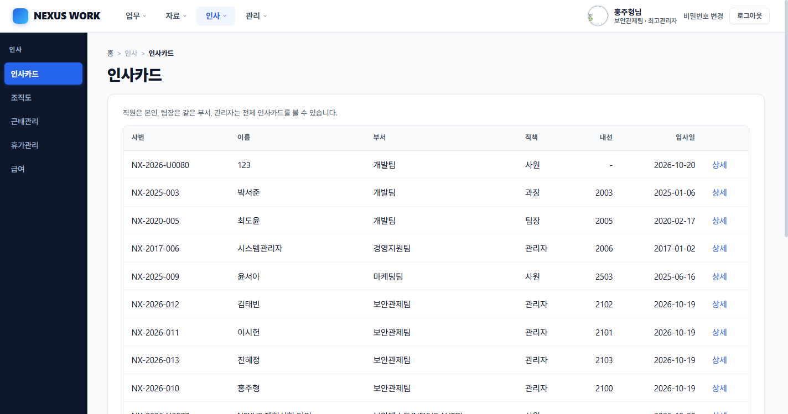
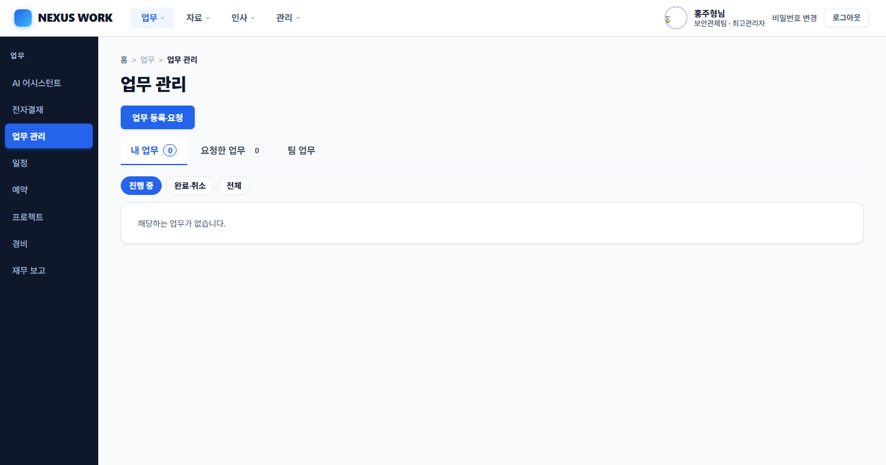
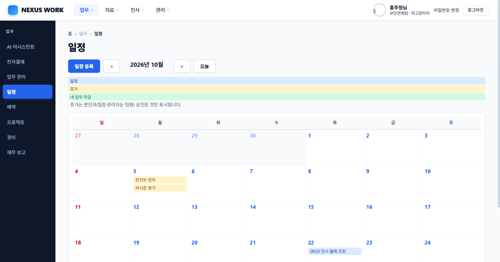
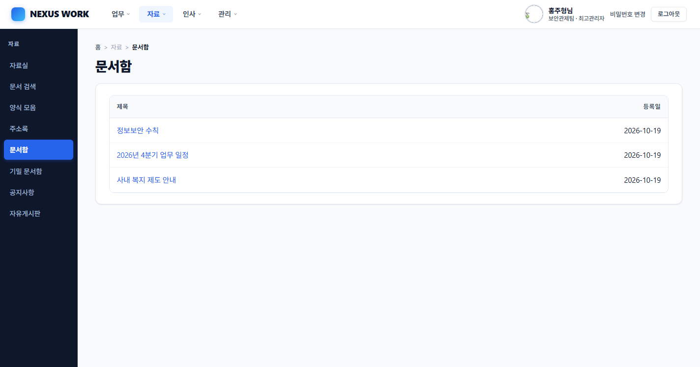
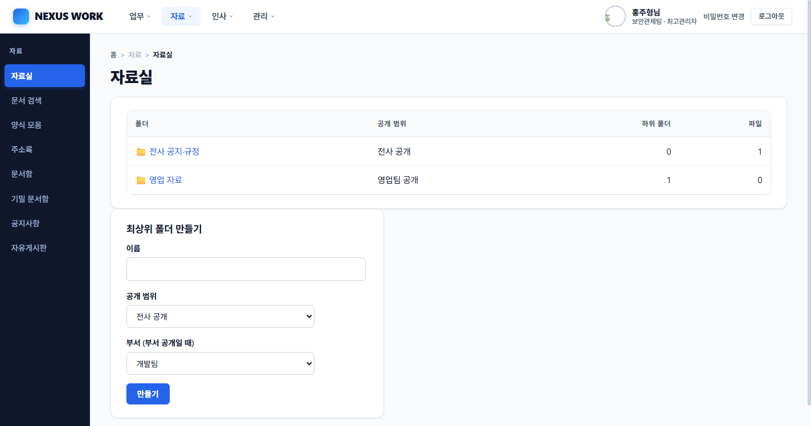
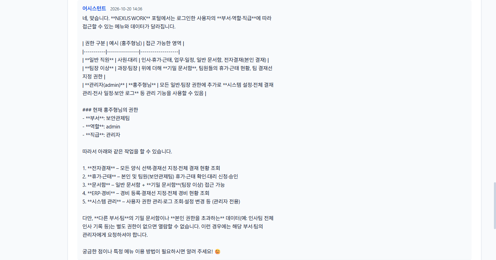
보안 전문 관제 기업(SOC/SIEM/SOAR) 수준의 전문성을 갖춘 관제 콘솔을 구축했습니다. R1~R12 탐지 룰과 Wazuh/Graylog/n8n/AI가 유기적으로 맞물려 실시간 공격을 격리합니다.
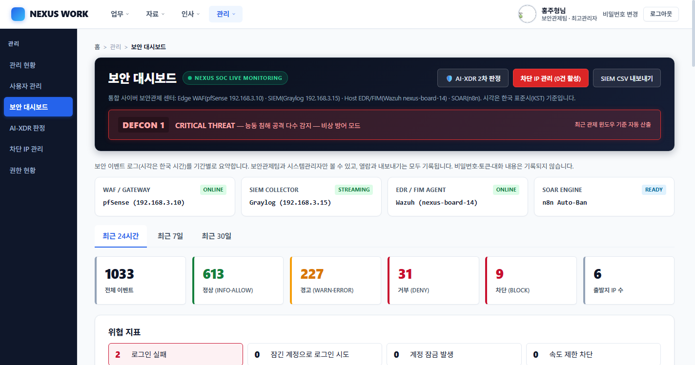
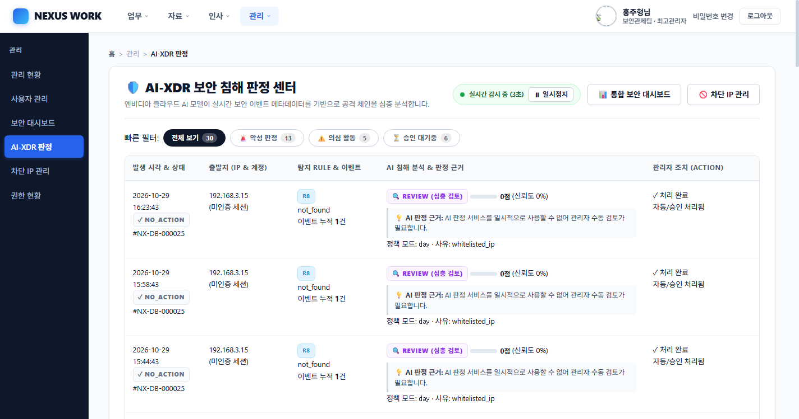
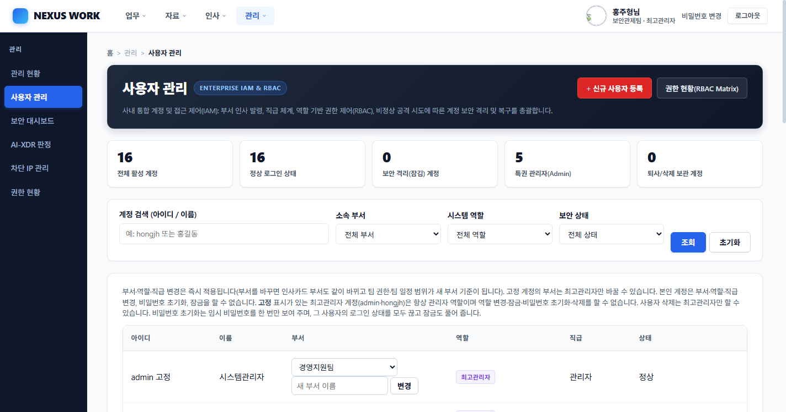
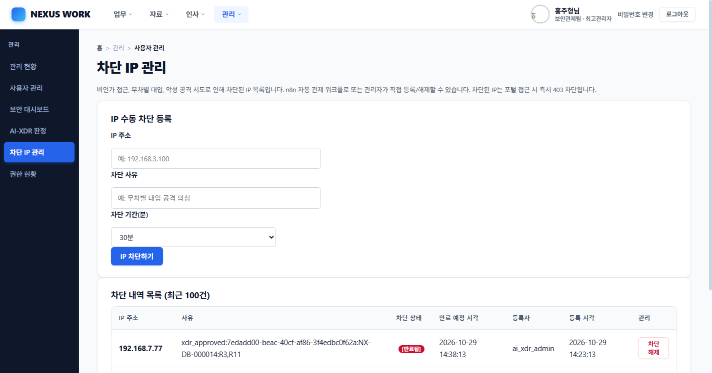
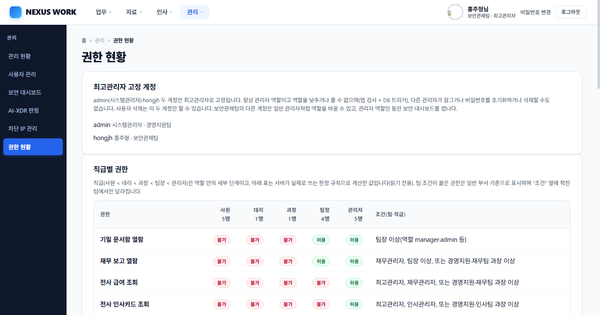
포털과 완벽히 동일한 사용자 계정 체계를 공유하는 크로스 플랫폼 데스크톱 사내 메신저입니다. 브라우저 외부에서도 실시간 업무 소통과 긴급 보안 알림을 수신할 수 있도록 제작되었습니다.
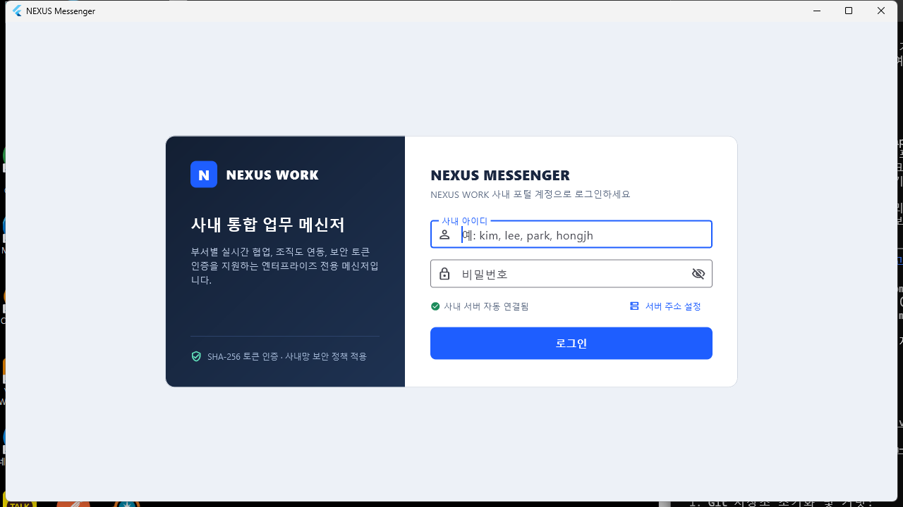
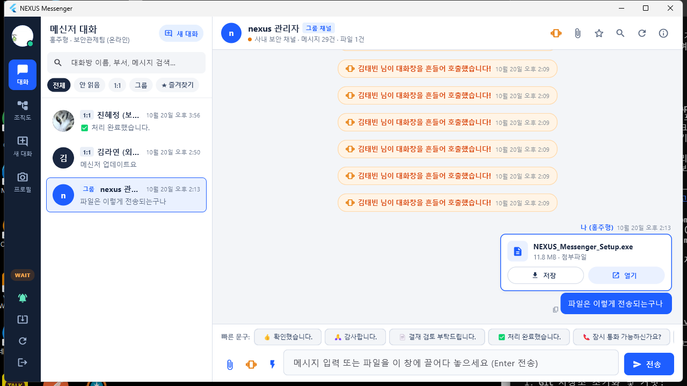
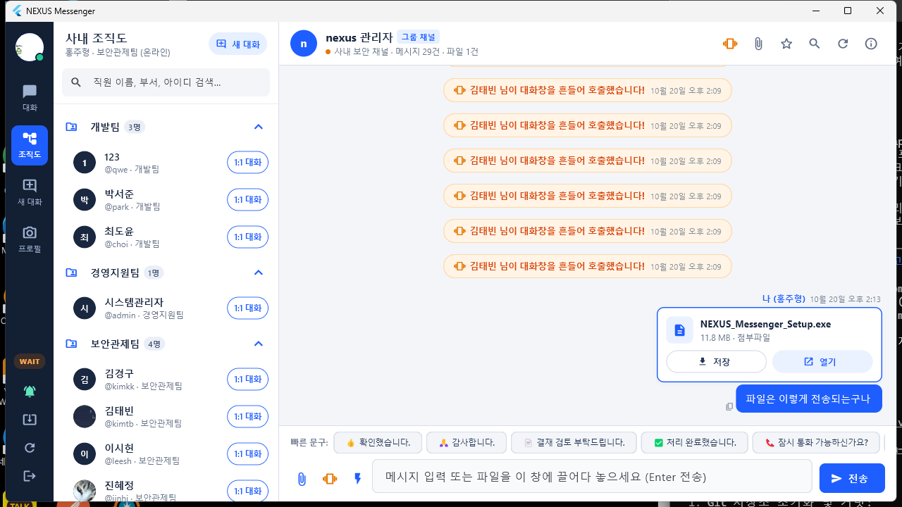
| 구분 | 보안 및 아키텍처 구현 내용 |
|---|---|
| 토큰 인증 | 쿠키 대신 SHA-256 해시로 저장되는 30일 만료 토큰을 사용하여 웹과 동일한 authenticate() 로직 재사용(무차별 대입 방어 및 계정 잠금 완벽 동기화). 로그아웃 시 즉시 DB에서 무효화 |
| CSRF 제외 | 쿠키가 아닌 Authorization: Bearer 방식을 사용하므로 /api/v1/* 경로는 구조적으로 CSRF 공격이 불가능하여 정교하게 분리 |
| 배포 보안 | 클라이언트 설치 및 자동 업데이트 시 update_verifier 해시 검증을 거쳐 변조된 실행 파일 배포 차단 |
/ai-xdr/process 호출 시 processed=0 침묵 실패 문제INSERT IGNORE 옵션으로 인해 에러 로그 없이 조용히 롤백되고 있었음.xdr_process_debug)를 구축하여 단계별 추적 보장.IGNORE)은 반드시 영향 받은 행 수(rowcount)를 검증해야 합니다.admin.py 내에서 log_event() 호출 시 키워드 인자(ip) 중복 전달 및 모듈 임포트 누락 확인.admin.py의 파라미터 전달 체계를 정규화하고 핫픽스 적용. 회귀 테스트 슈트에 수동 차단 검증 케이스를 추가하여 재발 방지./admin/audit/stream) 접속자가 늘어날 경우 다른 모든 웹 요청이 타임아웃 발생.AUDIT_STREAM_MAX_CONCURRENT=3), IP별 초당 개설 속도 제한, 600초 최대 수명 주기(AUDIT_STREAM_MAX_SECONDS=600s)의 3중 방어막을 구축하여 스레드 고갈 DoS 원천 방어.docs/03_팀_연동안내.md 문서로 명확히 정의하고, /internal/api/v1/* API 규격을 사전 합의하여 병목 없는 애자일 개발을 진행했습니다.※ 본 포트폴리오의 모든 데이터는 교육 및 검증용 가상 시나리오 데이터입니다. 화면 캡처는 2026-10-28~2026-10-29 로컬 및 분산 테스트베드 환경에서 직접 촬영되었습니다.